Loading...
Web Molecular Graphics
Alexander Rose
VIZBI 2017
Green Fluorescent Protein (PDB ID 1EMA)
VIZBI 2017
Why Web Molecular Graphics?
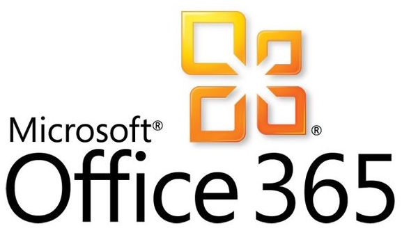

The last decade made the web a stable & versatile platform
- easier sharing we are usually connected
- more accessible information everyone has a browser installed
- live collaboration simultaneous viewing and editing
Why Web Molecular Graphics?
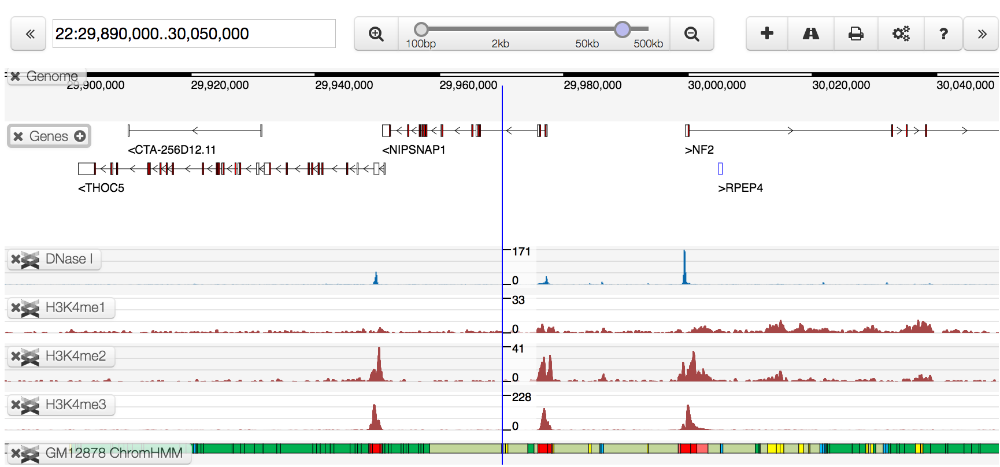
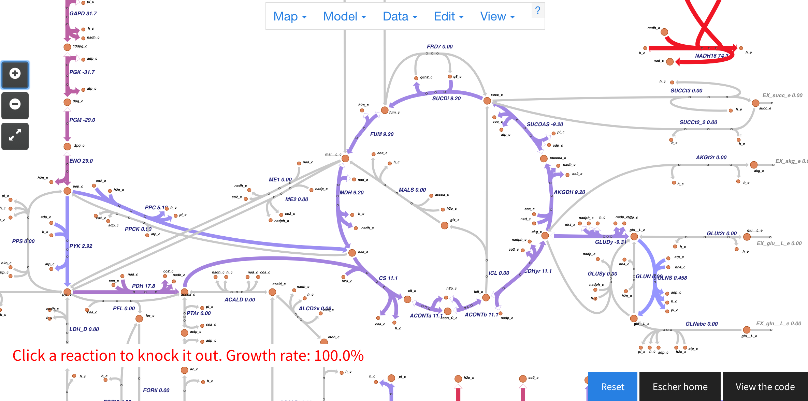
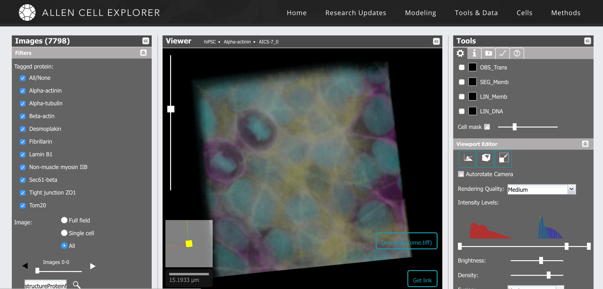
More than for everyday tools, lots of scientific applications
- Genome browsers UCSC, Biodalliance, ...
- Biological networks Cytoscape.js, BiGG/Escher, ...
- Cell exploring (volumetric) Allen Cell Explorer, ...
Brief & incomplete History of Web Molecular Graphics
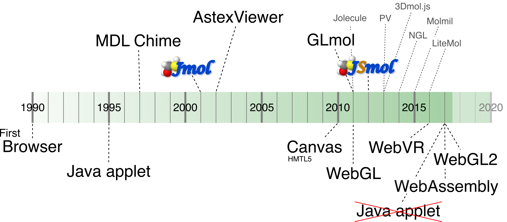Past Challenges
 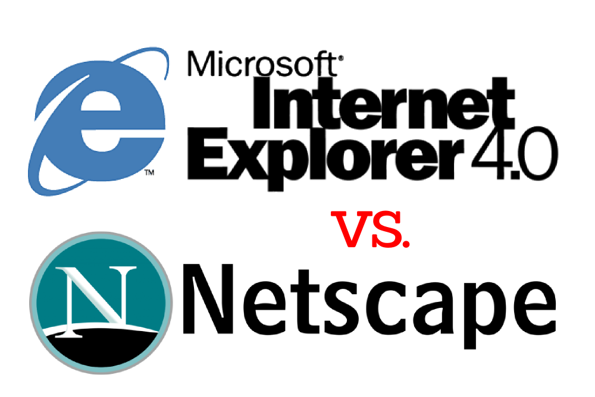
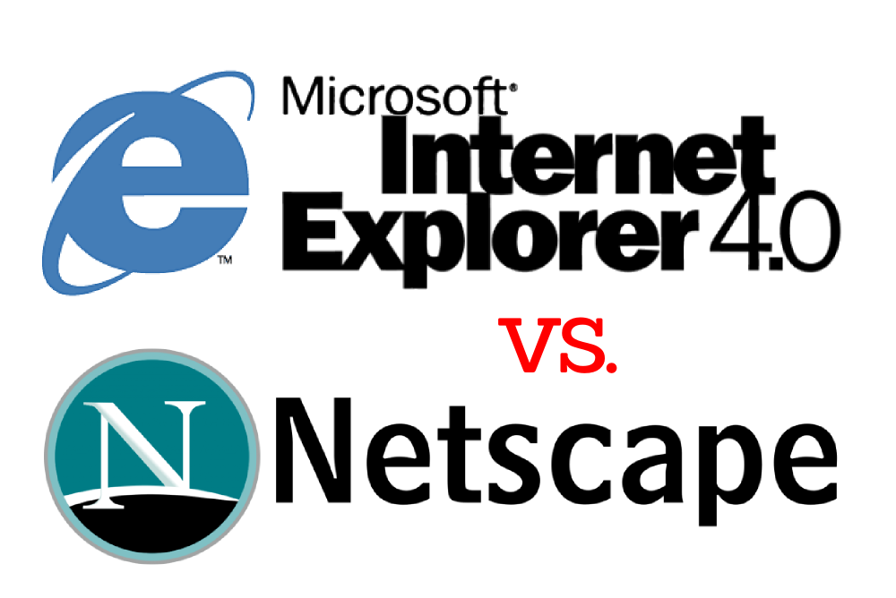
- Plugins security issues, had to be installed
- Cross-browser/OS issues quirks, non-standard behaviors
- GPU access/availability not (natively) available
- Scalability slow JavaScript
Solved Challenges

- Plugins support discontinued, feature-rich browsers
- Cross-browser/OS issues spec-compliant & evergreen browsers
- GPU access/availability natively available (WebGL, WebGL2)
- Scalability JavaScript within 2x of native apps
What is possible with web molecular graphics now?
Let me show you...
- this presentation is a web-site
- molecular graphics are rendered live
- from standard files, no pre-processing
- using the NGL Viewer & Library
Structural data
- Common representations
- Spacefill, Ball+Stick
- Backbone, Cartoon
- Surface
- Less common
- Rope
- HyperBall
Volumetric Data
- Data sources
- Xray/EM electron density
- Spatial probability density
- Electrostatic potential
- Local resolution mapped on surface
- Representations
- Isosurface
- Slice
- Points
Anthrax protective antigen pore (EMD-6224)
Scalability?
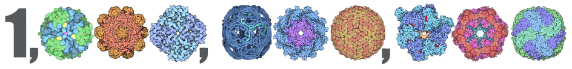
Atoms in the Protein Data Bank
- In over 130.000 structures (asymmetric units)
- 68 of the 100 largest structures deposited in past 3 years
- Largest structure: HIV-1 Capsid with ~2.4M unique atoms
What are Web Molecular Graphics for?
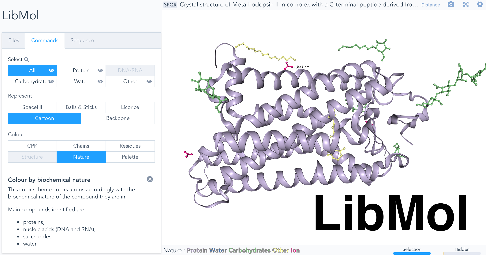
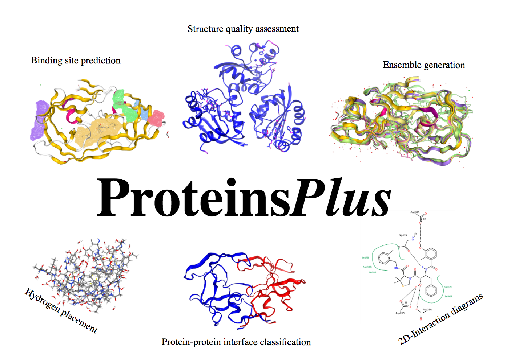
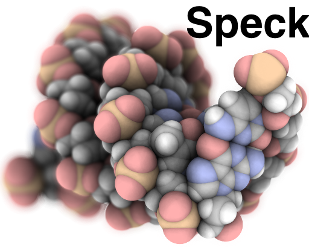
Vast amount of viewers. Why?
JSmol, GLmol, Jolecule, Libmol, NGL Viewer, MolMil, LiteMol, MoleculeViewer, iView, uglymol, magekinjas, Aquaria, ChemDoodle, Speck, ...- General purpose
- Input for computation
- Results/database entries
- Illustration
LibMol - ProteinsPlus - Speck
Integration with other web-tools
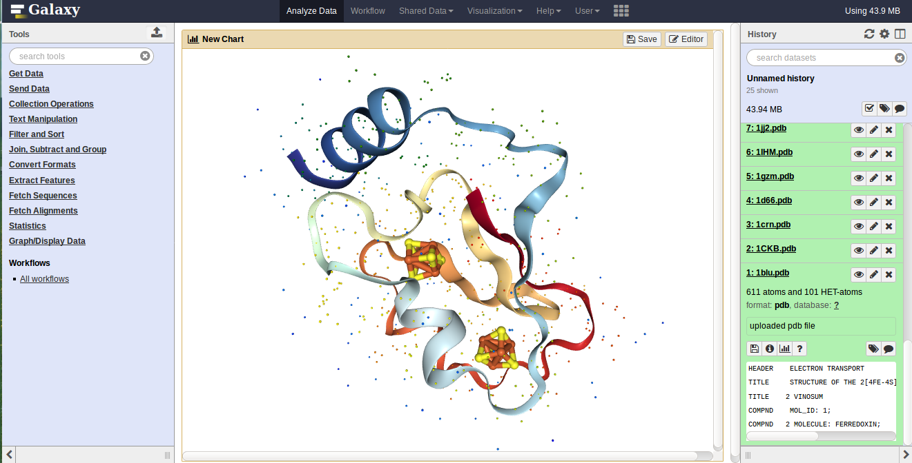

 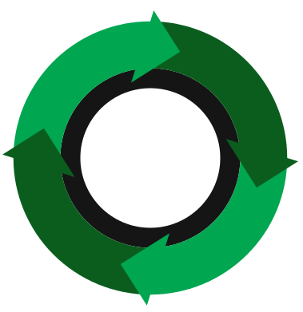
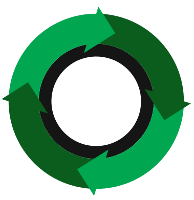
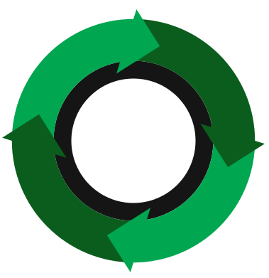
-
Galaxy Platform
NGL Viewer integrated as a visualization tool -
Jupyter Notebooks
nglview widget to interactively view structures and trajectories (kudos to Hai Nguyen)
-
WebComponents/BioJS
WebComponents: visualizations as HTML tags
BioJS: repository for bio-related components
More than Rendering
Manipulation besides nice graphics
- transform individual molecules
- selectively alter representation
- show/hide parts of the molecule
- change mouse/keyboard binding
- developers/experts want scripting
Data transfer
MDsrv
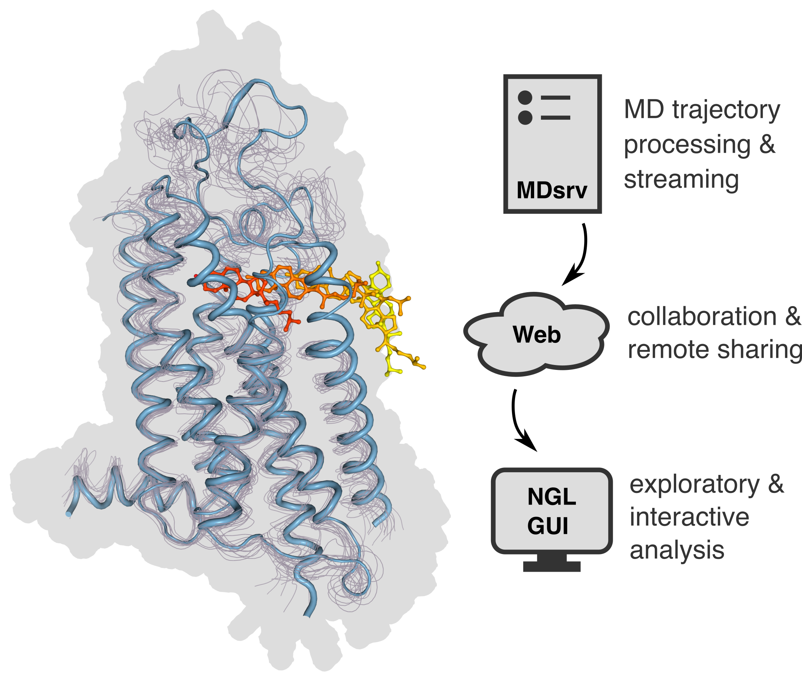 Streaming of trajectories frommolecular dynamics simulations
https://github.com/arose/mdsrv

 Compressed, binary format for the transmission macromolecular structures
Compressed, binary format for the transmission macromolecular structures
Data Challenges
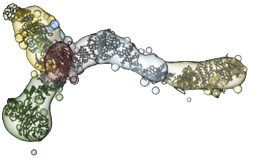
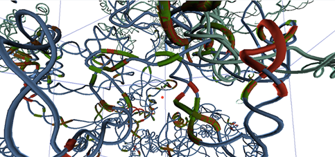
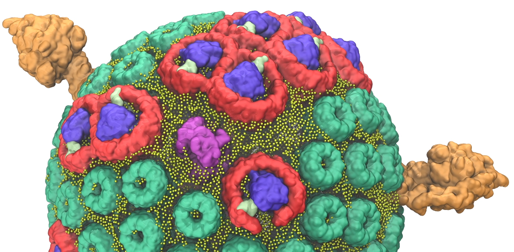
Bigger datasets, larger structures/complexes, more heterogeneous data
- Integrative/Hybrid models Spatial restraints, multi-scale, multi-state
- 3D Genome data Emerging technology
- Organelles/Whole cells Enormous data size, level-of-detail required
Code Challenges
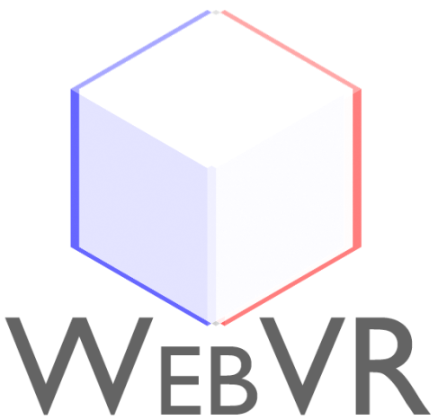
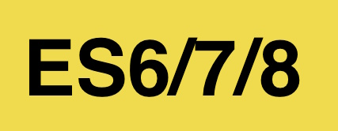
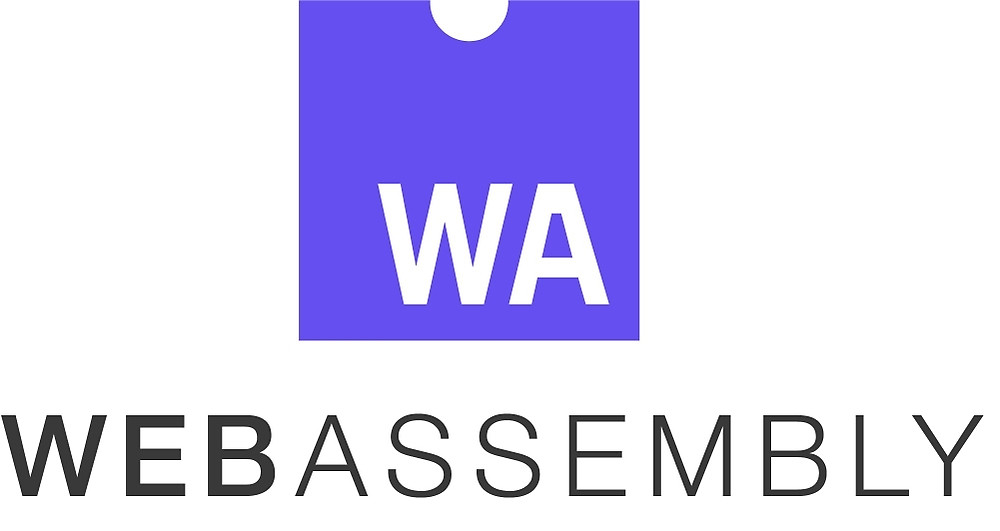
- Matching desktop applications Too what extent, for which audience?
- New web technologies WebVR, WebGL2, ES6/7/8, WebAssembly
- Developing large JS codebase Rely on tooling, use TypeScript?
- Avoid code duplication Share code for complex algorithms
Acknowledgements

-
RCSB PDB Team

-
NGL Contributors
- Fred Ludlow
- Paul Pillot
- Hai Nguyen
Join us: Two PostDoc positions open at the RCSB PDB in San Diego, CA
- NGL Viewer: https://github.com/arose/ngl
- MMTF: http://mmtf.rcsb.org
- Twitter: @asrmoin